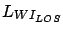
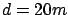

Siguiente: Caso NLOS
Subir: Modelo COST231 Walfisch-Ikegami
Anterior: Modelo COST231 Walfisch-Ikegami
Índice General
En este caso la señal pasa por un ``cañón'' formado en la calle por
los edificios, donde se aplica una ecuación diferente a la de
espacio libre:
Esto fue desarrollado en base a medidas adquiridas en Estocolmo,
Suecia. Tiene la misma forma que la ecuación de propagación en
espacio libre, y las constantes son elegidas de tal forma que
 es igual a la pérdida en espacio libre en .
SAPO